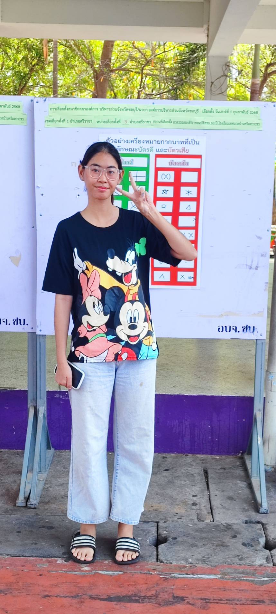

การเลือกตั้ง สมาชิกสภาองค์การบริหารส่วนจังหวัด และนายกองค์การบริหารส่วนจังหวัดชลบุรี
วันเสาร์ที่ 1 กุมภาพันธ์ พ.ศ.2568
รายละเอียดของสถานที่
- สถานที่เลือกตั้ง : อาคารฉลองสิริราชสมบัติครบ 60 ปี โรงเรียนเทศบาลบ้านศรีมหาราชา
- ที่เลือกตั้ง : หน่วยเลือกตั้งที่ 3 เทศบาลศรีราชา อำเภอศรีราชา จังหวัดชลบุรี เขตเลือกตั้งที่ 1
ภาพกิจกรรม

